Kacper Frelek
Inżynier lotnictwa i kosmonautyki (mgr inż.) · Aerodynamika i CFD
Jestem inżynierem lotnictwa i kosmonautyki z Warszawy i zajmuję się aerodynamiką oraz obliczeniową mechaniką płynów (CFD). Od grudnia 2025 roku pracuję jako inżynier CFD w Centrum Technologii Kosmicznych Instytutu Lotnictwa, gdzie symuluję silniki rakietowe. Wcześniej odbyłem praktyki z aerodynamiki w Rocket Factory Augsburg, a przez dwa lata zajmowałem się aeromechaniką silników lotniczych w EDC. W pracy magisterskiej na Politechnice Warszawskiej walidowałem laminarne modele nagrzewania aerodynamicznego przedniej osłony sondy Mars Science Laboratory na danych z tunelu uderzeniowego T5 w Caltech.

Doświadczenie
-
12/2025 – obecnie
Inżynier CFD
Instytut Lotnictwa, Centrum Technologii Kosmicznych · Warszawa
Symulacje CFD silników rakietowych: przygotowanie geometrii, generowanie siatki, obliczenia i opracowanie wyników. Optymalizuję też wewnętrzne powierzchnie kierujące przepływem w układach napędowych rakiet.
-
08/2025 – 11/2025
Praktykant, aerodynamika
Rocket Factory Augsburg (RFA) · Augsburg, Niemcy
Symulacje aerodynamiczne CFD na wszystkich etapach: przygotowanie, siatka, obliczenia i opracowanie wyników. Automatyzacja generowania siatek, przygotowania przypadków i postprocessingu w Pythonie oraz weryfikacja wyników badaniami niezależności od siatki i kryteriami zbieżności opartymi na monitorach.
-
06/2023 – 07/2025
Młodszy inżynier ds. aeromechaniki
Engineering Design Center (EDC), Instytut Lotnictwa · Warszawa
Analizy aeromechaniczne w GageMap i Ansys oraz interpretacja wyników. Udział w kampaniach testów na stanowisku oraz opracowanie danych pomiarowych i telemetrycznych. Przygotowanie dokumentacji technicznej do raportów certyfikacyjnych w międzynarodowych zespołach inżynierskich. Więcej o tej pracy
-
02/2022 – 05/2024
Członek zespołu analiz
Studenckie Koło Astronautyczne (SKA PW), sekcja rakietowa · Warszawa
Aerodynamiczne analizy CFD dzielonych kaczek rakiety FOK oraz stożka nosowego i stateczników rakiety sondażowej GROT.
-
07/2022 – 08/2022
Praktykant inżynierski
Centrum Badań Kosmicznych PAN (CBK PAN) · Warszawa
Przegląd literatury i analizy potrzebne do przygotowania stanowisk testowych. Modelowanie elementów konstrukcyjnych do testów w Siemens NX i rysunki wykonawcze.
Wykształcenie
-
01/2024 – 10/2026
Magister inżynier, lotnictwo i kosmonautyka
Politechnika Warszawska, Wydział Mechaniczny Energetyki i Lotnictwa (MEiL)
Praca: Walidacja laminarnych modeli nagrzewania aerodynamicznego dla przedniej części kadłuba sondy Mars Science Laboratory w oparciu o dane z tunelu uderzeniowego T5. Promotor: dr Michał Remer.
Projekt przejściowy: Simulation of Reentry Conditions for Starship: A CFD Approach to Aerodynamic Coefficients. -
10/2020 – 02/2024
Inżynier, lotnictwo i kosmonautyka
Politechnika Warszawska, Wydział Mechaniczny Energetyki i Lotnictwa (MEiL)
Praca: Aerodynamic Performance Analysis of Falcon 9 Grid Fins: A Computational Investigation (CFD).
Projekt przejściowy: Numerical Investigation of Wind Flow Patterns Around Urban Structures. - 10/2023 – 03/2024
-
Kursy
Certyfikaty
Siemens Industry Software: podstawy modelowania brył 3D i złożeń oraz rysunku w NX.
Politechnika Warszawska (09/2022): geometria, siatka i wprowadzenie do analiz przepływowych w programach Ansys.
Wybrane prace

Nagrzewanie aerodynamiczne osłony Mars Science Laboratory
Szesnaście przypadków we Fluencie (katalityczność ścianki, 1T/2T, schemat pierwszego/drugiego rzędu) porównanych z danymi z tunelu T5 i obliczeniami NASA.

Aerodynamika Starshipa przy powrocie
Siła nośna, opór i moment pochylający od M 0,3 do 4,05 na siatce 15,5 mln komórek oraz test, czy wpływ klap i kaczek sumuje się liniowo.

NACA 2412 przy 30°: uRANS, DES i LES
Ten sam profil w stanie przeciągnięcia policzony trzema podejściami do turbulencji, z siatkami dobranymi do wymagań każdej metody.

Stery kratownicowe Falcona 9
Obliczenia CFD 2D i 3D uproszczonego steru kratownicowego wraz z badaniem zbieżności siatki.

Wymiana ciepła w strudze uderzającej
Przypadek porównawczy Framatome odtworzony w ANSYS CFX i zestawiony z opublikowaną weryfikacją w STAR-CCM+.

Wiatr wokół nowego wieżowca
Wiatr na poziomie pieszych w modelu kwartału w skali 1:500, porównany z wynikami z tunelu aerodynamicznego dla trzech kierunków wiatru.
Umiejętności
- CFD
- Ansys Fluent, Ansys CFX, OpenFOAM; generowanie siatek i badania niezależności od siatki, RANS / DES / LES, przepływy ściśliwe i reagujące
- CAD
- Siemens NX, Ansys SpaceClaim, Ansys DesignModeler
- Programowanie i narzędzia
- Python (automatyzacja), MATLAB, LaTeX
- Języki
- angielski C1, polski ojczysty
- Zainteresowania
- Technologie kosmiczne, aerotermodynamika, rozwój osobisty, podróże
Kontakt
Najszybciej złapiesz mnie mailowo: kacperfrelek@gmail.com.
Aeromechanika silników lotniczych w EDC
Od czerwca 2023 do lipca 2025 roku pracowałem jako młodszy inżynier ds. aeromechaniki w Engineering Design Center w Warszawie, przy aeromechanice silników lotniczych.
Czym się zajmowałem
- Wykonywałem analizy aeromechaniczne w GageMap i Ansys oraz interpretowałem ich wyniki.
- Uczestniczyłem w kampaniach testów na stanowisku, a potem analizowałem i opracowywałem dane pomiarowe i telemetryczne.
- Przygotowywałem dokumentację techniczną do raportów certyfikacyjnych.
- Pracowałem w międzynarodowych zespołach inżynierskich.
Same projekty są poufne, więc ta strona opisuje tylko zakres pracy. Poniższe diagramy to ogólne, podręcznikowe ilustracje pojęć, a nie dane z projektów.
Tło
Łopatki wirnika drgają ze swoimi częstościami własnymi, gdy wymuszenie, np. ślady aerodynamiczne łopatek kierownicy, powtarza się z pasującą częstotliwością. Wykres Campbella pokazuje częstości własne łopatek w funkcji prędkości obrotowej razem z liniami rzędów wymuszenia silnika, co pozwala znaleźć i sprawdzić przecięcia w zakresie roboczym. Naprężenia drganiowe zmierzone lub obliczone w tych punktach porównuje się następnie z granicami zmęczeniowymi, np. na wykresie Goodmana, który łączy amplitudę naprężeń z naprężeniem średnim (głównie od sił odśrodkowych).


Walidacja laminarnych modeli nagrzewania aerodynamicznego dla przedniej części kadłuba sondy Mars Science Laboratory w oparciu o dane z tunelu uderzeniowego T5
Moja praca magisterska: na ile obliczeniowa prognoza strumienia ciepła dla kapsuły wchodzącej w atmosferę Marsa zależy od modelu termicznego, schematu numerycznego i chemii przyściennej?
Pytanie
Osłonę termiczną pojazdu wchodzącego w atmosferę Marsa wymiarowuje się na podstawie prognozowanego nagrzewania konwekcyjnego w gorącej, reagującej chemicznie warstwie CO₂ za falą uderzeniową, dlatego ważne jest, jak bardzo ta prognoza zależy od założeń modelu. Wright i in. (2006) zmierzyli strumień ciepła na modelu osłony MSL w skali 5 %, czyli stożku kulistym 70°, w tunelu uderzeniowym T5 w Caltech i porównali go z obliczeniami w kodach NASA DPLR i LAURA. Jako przypadek odniesienia wybrałem ich laminarny strzał nr 2254 przy zerowym kącie natarcia i odtworzyłem go w ANSYS Fluent.
Zmieniałem trzy ustawienia, co dało macierz 16 przypadków:
- Dyskretyzacja przestrzenna: schemat upwind pierwszego lub drugiego rzędu.
- Model termiczny: jednotemperaturowy (1T) albo dwutemperaturowy model Parka (2T), w którym energia oscylacyjna liczona jest osobno.
- Ścianka: niekatalityczna, superkatalityczna (gaz przy ściance wymuszony jako czysty CO₂), skończenie szybki model Mitcheltree oraz ścianka adiabatyczna dla pola temperatury.
Wszystkie obliczenia są ustalone, laminarne i osiowosymetryczne 2D, z solverem density-based we Fluencie i pięcioskładnikową mieszaniną marsjańską (CO₂, CO, O₂, O, C; bez jonizacji). Ciepła właściwe pochodzą z dziewięciowspółczynnikowych wielomianów NASA, a własności transportowe z teorii kinetycznej. Siatkę zagęszczono przy fali uderzeniowej adaptacją według gradientu gęstości.
Tabela 1. Warunki testu i model
| Prędkość strumienia \(V_\infty\) | 3367 m/s |
|---|---|
| Gęstość strumienia \(\rho_\infty\) | 0,03116 kg/m³ |
| Temperatura strumienia \(T_\infty\) | 1828 K |
| Ciśnienie strumienia \(p_\infty\) (gaz doskonały) | ≈ 10,8 kPa |
| Liczba Macha \(M_\infty\) (\(\gamma \approx 1{,}3\)) | ≈ 5,0 |
| Entalpia całkowita \(h_0\) | 10,6 MJ/kg |
| Ciśnienie w zbiorniku dyszy \(p_0\) | 19,45 MPa |
| Udziały masowe w strumieniu | CO₂ 0,550, CO 0,287, O₂ 0,151, O 0,012 |
| Temperatura ścianki \(T_w\) | 300 K |
| Promień noska \(R_n\) / promień podstawy \(R_b\) | 44,45 mm / 88,9 mm |
| Promień zaokrąglenia krawędzi | 8,89 mm (≈ 0,1 \(R_b\)) |
Parametry strumienia według Wrighta i in. (2006), tabela 2.
Tabela 2. Strumień ciepła w punkcie spiętrzenia, W/cm²
| Ścianka | 1T, 1. | 1T, 2. | 2T, 1. | 2T, 2. | DPLR* |
|---|---|---|---|---|---|
| Niekatalityczna | 639 | 617 | 662 | 652 | ≈ 650 |
| Mitcheltree | 520 | 739 | 710 | 721 | ≈ 700 |
| Superkatalityczna | 718 | 856 | 1140 | 1122 | ≈ 1100 |
*Laminarne rozwiązanie DPLR z pracy Wrighta i in. (2006). Cztery przypadki adiabatyczne z definicji nie mają strumienia ciepła. „1.” i „2.” oznaczają rząd schematu.
Wnioski
- Model termiczny miał większe znaczenie niż rząd schematu. W modelu jednotemperaturowym strumień ciepła w punkcie spiętrzenia na ściankach katalitycznych był wyraźnie za niski (718–856 wobec ok. 1100 W/cm² dla ścianki superkatalitycznej). Z dwutemperaturowym modelem Parka wszystkie trzy modele ścianki dały wartości bliskie wynikom Wrighta w punkcie spiętrzenia i w maksimach przy krawędzi.
- Model 2T ze schematem drugiego rzędu najlepiej zgadzał się z danymi odniesienia, łącznie ze wzrostem nagrzewania w stronę krawędzi osłony. Jego jedyną wadą były oscylacje w rozwiązaniach drugiego rzędu dla ścianki Mitcheltree i niekatalitycznej.
- Chemia przyścienna wyznacza poziom. Ścianka niekatalityczna daje dolne ograniczenie, a superkatalityczna górne. W tym strzale model Mitcheltree jest znacznie bliżej dolnej granicy, bo do ścianki dociera niewiele atomowego tlenu.
- Rozwiązania pierwszego rzędu odsuwają falę uderzeniową od ciała, co widać po położeniu pasa zagęszczonej siatki.
Dla kontroli policzyłem ten przypadek także ręcznie. Uproszczone oszacowanie Faya–Riddella (prostopadła fala uderzeniowa w gazie doskonałym, lepkość z prawa Sutherlanda, liczba Lewisa równa jeden) daje ok. 1,1 × 10³ W/cm², blisko wyniku CFD dla ścianki superkatalitycznej. Korelacje Suttona–Gravesa (5,6–6,1 × 10² W/cm²) i Detry–Hidalgo (5,6 × 10² W/cm²) wypadają w okolicy poziomu niekatalitycznego. Oszacowanie Faya–Riddella możesz powtórzyć w Aero Labie.


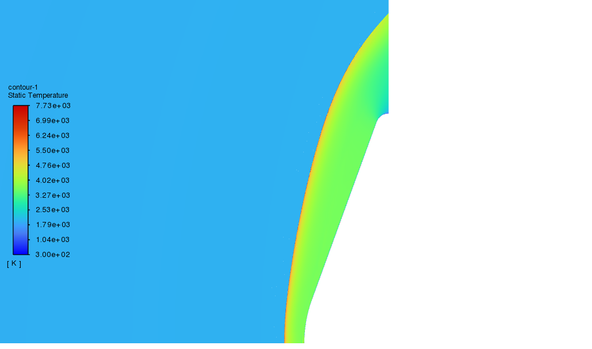


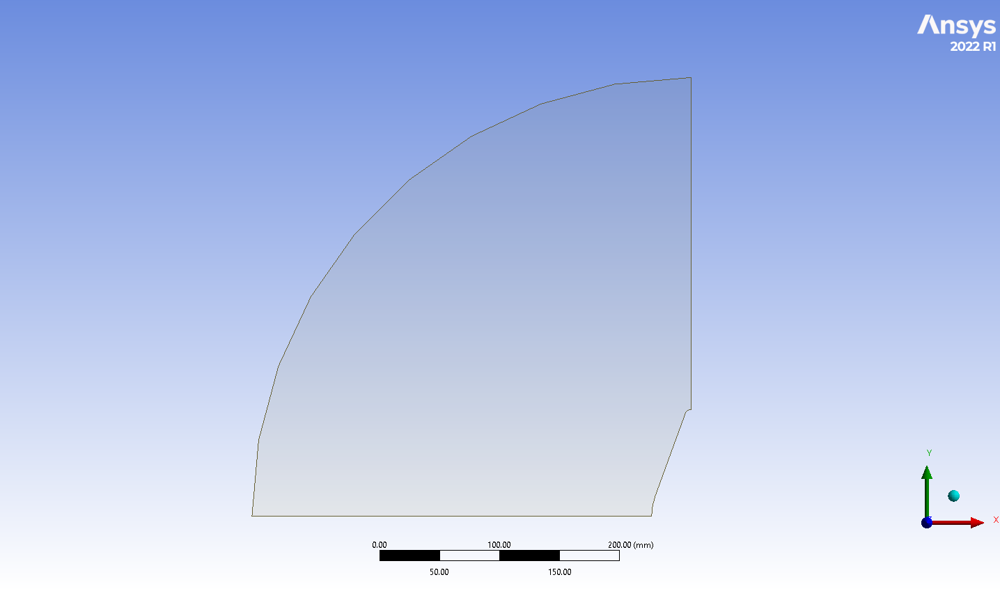

Równania modelu
Model dwutemperaturowy rozwiązuje dodatkowe równanie zachowania energii oscylacyjnej \(e_v\):
$$\frac{\partial (\rho e_v)}{\partial t} + \nabla\cdot(\rho e_v \mathbf{u}) = -\nabla\cdot\mathbf{q}_v + Q_{T\text{-}V} + \sum_s \dot{\omega}_s\, e_{v,s}$$Wymiana energii między stopniami translacyjnymi i oscylacyjnymi opisana jest modelem Landaua–Tellera, z czasem relaksacji Millikana–White'a i wysokotemperaturową poprawką Parka:
$$Q_{T\text{-}V} = \sum_s \rho_s \frac{e_{v,s}^{*}(T) - e_{v,s}}{\tau_s}, \qquad \tau_s = \tau_s^{MW} + \tau_s^{P}$$Szybkości dysocjacji liczone są w temperaturze sterującej Parka, co opóźnia dysocjację do chwili wzbudzenia stopni oscylacyjnych:
$$T_a = \sqrt{T\,T_v}$$Strumień ciepła do ścianki, przy współrzędnej \(n\) skierowanej od ścianki w głąb gazu, to suma przewodzenia w obu rodzajach energii i entalpii unoszonej przez dyfundujące składniki:
$$q_w = \kappa \left(\frac{\partial T}{\partial n}\right)_w + \kappa_v \left(\frac{\partial T_v}{\partial n}\right)_w + \sum_s \rho D_s h_s \left(\frac{\partial Y_s}{\partial n}\right)_w$$Aerodynamika Starshipa przy powrocie do atmosfery
Jak klapy kadłuba i kaczki Starshipa kształtują jego aerodynamikę podczas opadania, od M 4,05 do prędkości poddźwiękowych, na siatce 15,5 mln komórek.
Przygotowanie
Zbudowałem uproszczoną geometrię Starshipa z przednimi kaczkami i tylnymi klapami, a siatkę złożyłem z komórek strukturalnych i niestrukturalnych, z obszarami zagęszczenia wokół pojazdu i jego śladu. Badanie na trzech siatkach (7,22, 15,5 i 16,34 mln komórek) pokazało zmianę współczynnika oporu poniżej 0,5 % między dwiema najgęstszymi, dlatego do obliczeń użyłem siatki 15,5 mln komórek. Warunki przepływu odpowiadają profilowi opadania: dwanaście punktów od M 4,05 na 35 km do M 0,31 na 1 km, z gęstością, temperaturą i lepkością z atmosfery wzorcowej dla każdej wysokości.
Wyniki
- Współczynnik siły nośnej gwałtownie rośnie w zakresie okołodźwiękowym (M ≈ 0,8–1,2), z maksimum tuż powyżej M 1, po czym ustala się na niższym, stałym poziomie.
- Opór pokazuje typowy przyrost okołodźwiękowy z maksimum między M 0,9 a 1,1 i stopniowo maleje powyżej M 2.
- Moment pochylający jest lekko ujemny przy małych liczbach Macha, w zakresie okołodźwiękowym silniej pochyla nos w dół, a przy prędkościach nad- i hiperdźwiękowych wraca w stronę zera.
Czy efekty powierzchni sterowych można sumować?
Żeby nie liczyć każdej kombinacji klap i kaczek, sprawdziłem, czy ich wpływ sumuje się liniowo. Przypadki z przeciwnymi wychyleniami (klapy −60° z kaczkami +60° i odwrotnie) odtworzyły oczekiwane współczynniki z dokładnością ok. 10 % dla klap i 15 % dla kaczek. To wystarcza do interpolacji między konfiguracjami na wstępnym etapie projektu. Ograniczenie: przez cały zakres liczb Macha policzyłem tylko jedną konfigurację powierzchni sterowych.

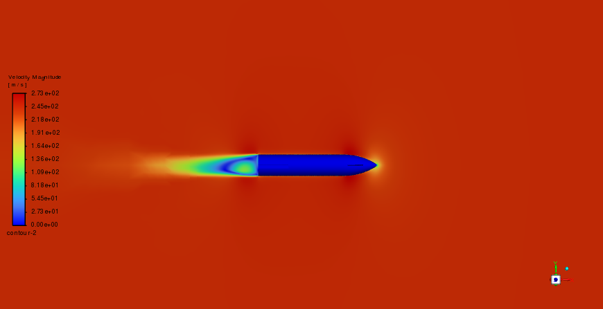
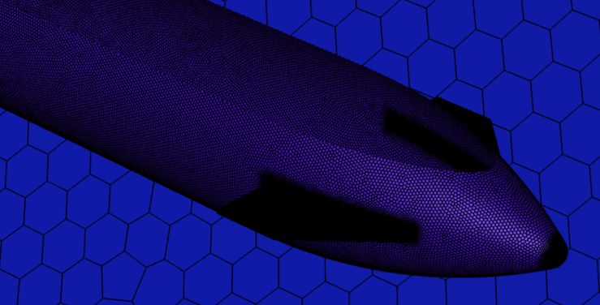
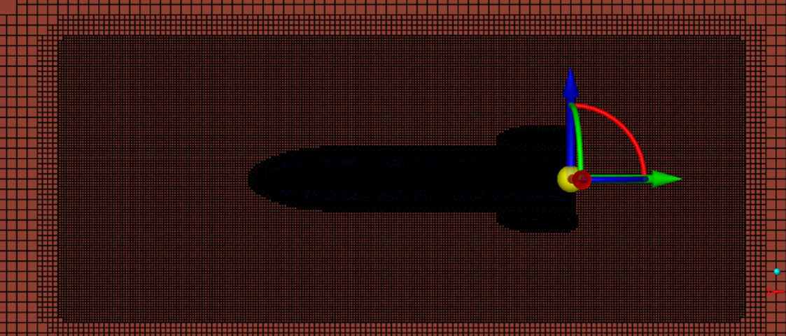


NACA 2412 przy 30°: porównanie uRANS, DES i LES
Jeden profil w stanie przeciągnięcia i trzy sposoby traktowania turbulencji: co każda metoda rozwiązuje i ile kosztuje w siatce i kroku czasowym.
Przypadek to profil NACA 2412 o cięciwie 1 m przy kącie natarcia 30°, daleko za przeciągnięciem, przy M 0,3 i warunkach na poziomie morza (293 K, 101 325 Pa), co daje \(Re \approx 6{,}85 \times 10^6\). Domena typu C sięga 10 cięciw przed profil i 15 za nim. Intensywność turbulencji na wlocie we wszystkich przypadkach wynosiła 10 %.
- uRANS (k-ω SST) uśrednia wszystkie fluktuacje turbulentne i je modeluje. Tanio oddaje wielkoskalowy cykl odrywania wirów. Wymaga \(y^+ \approx 1\).
- DES liczy RANS w przylegającej warstwie przyściennej i przełącza się na LES w obszarze oderwania, zależnie od lokalnego rozmiaru siatki. Wymaga \(y^+ < 5\) przy ściance oraz drobnych, prawie izotropowych komórek w śladzie.
- LES (model podsiatkowy Smagorinsky'ego) rozwiązuje duże wiry w całej domenie, a modeluje tylko najmniejsze skale. Jest zdecydowanie najdroższe i wymaga najgęstszej siatki przy ściance.
Filmy pokazują, ile więcej drobnych struktur w śladzie zachowują DES i LES w porównaniu z uRANS.


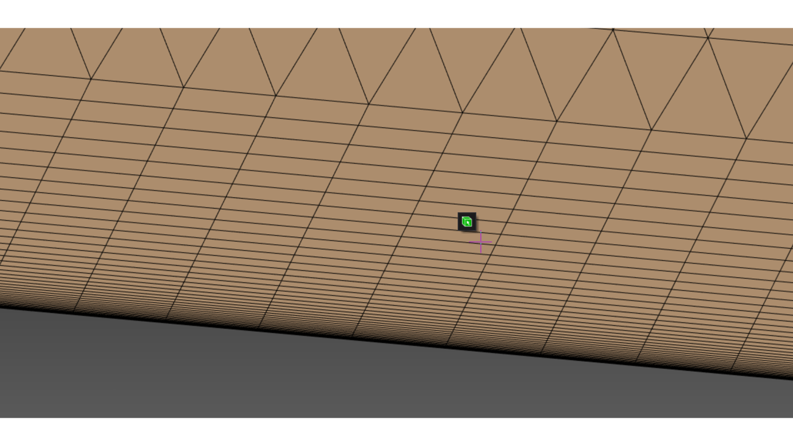

Stery kratownicowe Falcona 9
Moja praca inżynierska: charakterystyki aerodynamiczne powierzchni sterowej używanej przy powrocie do atmosfery, w całym zakresie liczb Macha.
Ster kratownicowy to krata z cienkich, przecinających się płytek. Daje dużą siłę sterującą przy niewielkich rozmiarach i wymaga małego momentu zawiasowego, dlatego Falcon 9 używa takich sterów do naprowadzania pierwszego stopnia w atmosferze. Najtrudniejszy jest zakres okołodźwiękowy: w małych komórkach kraty może dojść do zdławienia przepływu, co zwiększa opór i obniża skuteczność steru.
Co zrobiłem
- Przygotowałem uproszczony model CAD steru.
- Przeprowadziłem symulacje CFD na modelach 2D i 3D i porównałem wyniki.
- Wykonałem badania zbieżności siatki (rys. 4).
- Opracowałem pola przepływu w ANSYS CFD-Post.


Wymiana ciepła w strudze uderzającej w ANSYS CFX
Okrągła struga uderzająca w podgrzewaną płytę, odtworzona w CFX dla Framatome i porównana z opublikowanym przypadkiem weryfikacyjnym STAR-CCM+.
Strugi uderzające dają bardzo wysokie lokalne współczynniki wymiany ciepła, ale są trudnym przypadkiem dla modeli turbulencji. Parametry testu: średnica dyszy \(D = 25\) mm, odległość dyszy od płyty \(H/D = 2\), \(Re = 20\,000\), w pełni rozwinięty profil przepływu w rurze na wylocie dyszy i równomierny strumień ciepła na płycie. Szukanym wynikiem jest lokalna liczba Nusselta wzdłuż płyty, która dla \(H/D < 4\) ma dwa maksima.
Podejście
- CFX nie ma prawdziwego trybu 2D, więc przepływ osiowosymetryczny zamodelowałem jako klin 5° o grubości jednej komórki.
- Rozwinięty profil na wlocie zadałem wyrażeniem opartym na prawie potęgowym 1/7 i współczynniku tarcia Blasiusa.
- Dodałem obszar zagęszczenia siatki przy wylocie dyszy i w strefie spiętrzenia.
- Głównym modelem był k-ε; warstwę przyścienną siatki zmieniałem w pięciu wariantach (maksymalne \(y^+\) od ok. 20 do 127), żeby sprawdzić, jak zależy od niej liczba Nusselta.
Rezultat
Wyniki z CFX nie odtworzyły podwójnego maksimum liczby Nusselta tak wyraźnie jak w źródle, a wartości się różniły. Częściowo wynika to z tego, że CFX dla k-ε oferuje tylko skalowalne funkcje ściany, co ogranicza dokładność wymiany ciepła przy ściance. Mój wniosek dla Framatome był taki, że ta konfiguracja w CFX nie jest najdokładniejszą drogą dla tego przypadku.


Wiatr wokół nowego wieżowca
Czy nowy wysoki budynek sprawi, że w okolicznych uliczkach będzie zbyt wietrznie dla pieszych? CFD modelu kwartału w skali, porównane z badaniami w tunelu aerodynamicznym.
- Model: kwartał w skali 1:500, takiej jak model w tunelu, żeby wyniki dało się porównać bezpośrednio.
- Napływ: ten sam profil potęgowy co w tunelu, \(V(z) = V_m (z/10)^{\alpha}\), z \(\alpha = 0{,}19\) dla terenu kategorii III i 0,24 dla kategorii IV. Intensywność turbulencji dobierałem w zakresie 15–35 %; najlepszą zgodność dało ok. 25 %.
- Model turbulencji: realizable k-ε, powietrze o stałej gęstości.
- Siatka: rzadka i gęsta (ok. 12,7 mln komórek), z zagęszczeniem wokół budynków.
- Przypadki: wiatr z kierunków 0°, 45° i 90°.
Porównanie z tunelem aerodynamicznym
Strefy silnego wiatru pokrywały się z tunelem dla wszystkich trzech kierunków; najsilniejszy wiatr występował przy najwyższym budynku. Różnice były lokalne: przy 45° przepływ w jednym przejściu był nieco szybszy niż w pomiarach, a przy 90° CFD pokazało niemal stojący obszar między dwoma budynkami, którego nie było w tunelu. Przyczyn upatruję w rozdzielczości siatki, stałych modelu k-ε, profilu na wlocie i przyjętej intensywności turbulencji.


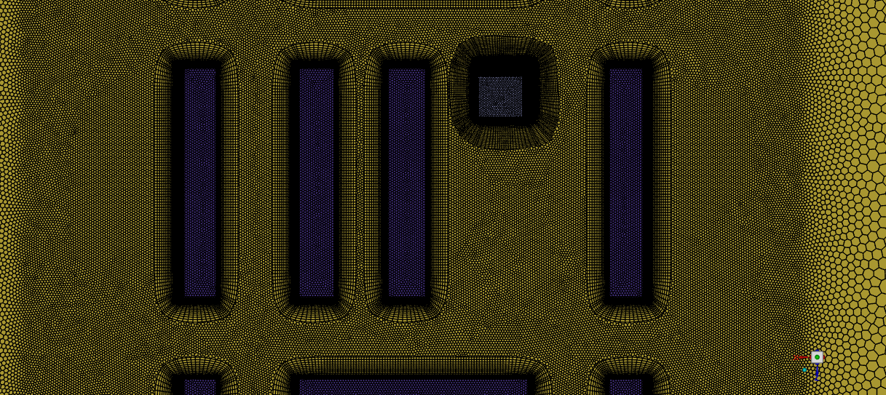
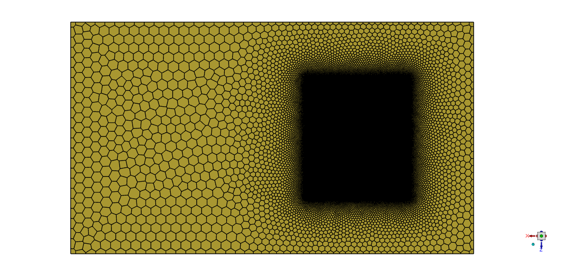

Aero Lab
Dwa małe kalkulatory do szybkich sprawdzeń: wysokość pierwszej komórki dla zadanego \(y^+\) i oszacowanie nagrzewania w punkcie spiętrzenia metodą Faya–Riddella. To podręcznikowe pierwsze przybliżenia, a nie zamiennik CFD.
Wysokość pierwszej komórki dla zadanego \(y^+\)
Oszacowanie dla płaskiej płyty: współczynnik tarcia, grubość warstwy przyściennej i wysokość pierwszej komórki przy ściance.
Wysokość pierwszej komórki \(\Delta y\)
| Liczba Reynoldsa \(Re_L\) | – |
|---|---|
| Współczynnik tarcia \(c_f\) przy \(x = L\) | – |
| Naprężenie styczne \(\tau_w\) / prędkość tarcia \(u_\tau\) | – |
| Grubość warstwy przyściennej \(\delta_{99}\) | – |
| z [km] | T [K] | p [Pa] | ρ [kg/m³] | μ [μPa·s] | ν [m²/s] |
|---|
Strumień ciepła w punkcie spiętrzenia według Faya–Riddella
Laminarny strumień ciepła w punkcie spiętrzenia kuli, liczony tą samą uproszczoną metodą co w rozdziale 4 mojej pracy: prostopadła fala uderzeniowa w gazie doskonałym, newtonowski gradient prędkości, lepkość z prawa Sutherlanda.
Strumień ciepła w punkcie spiętrzenia \(q_w\)
| Strumień swobodny \(p_\infty\), \(T_\infty\), \(\rho_\infty\), \(V_\infty\) | – |
|---|---|
| Za falą \(p_e\), \(T_e\), \(\rho_e\) | – |
| Gęstość przy ściance \(\rho_w\) | – |
| Lepkość \(\mu_e\) / \(\mu_w\) | – |
| Gradient prędkości \((du_e/dx)_s\) | – |
| \(h_{0e}\) / \(h_w\) / \(\Delta h\) | – |
| Współczynnik dysocjacji | – |
| Stosunek ciśnień całkowitych \(p_{02}/p_{01}\) | – |
Założenia: ustalony przepływ laminarny w punkcie spiętrzenia; fala traktowana jako prostopadła w gazie doskonałym (\(\gamma = 1{,}30\) i \(Pr = 0{,}70\) dla CO₂, \(\gamma = 1{,}40\) i \(Pr = 0{,}71\) dla powietrza), a jako stan na brzegu warstwy przyściennej przyjęto stan statyczny za falą, jak w pracy. Ściśle rzecz biorąc, stan brzegowy to stan spiętrzenia za falą; dla przypadku T5 różnica wynosi kilka procent. Ciśnienie stałe w poprzek warstwy (\(p_w = p_e\)). \(h_D\) jest daną wejściową, bo wymaga obliczeń chemii równowagowej: 0,29 dla T5 to energia rekombinacji zdysocjowanego strumienia (CO, O, O₂) z powrotem do CO₂ w stosunku do \(h_0\). Dla przypadków lotu zostaw zero, chyba że gaz za falą jest zdysocjowany.
Użyte równania
Wysokość pierwszej komórki
Atmosfera i lepkość (gaz doskonały, prawo Sutherlanda):
$$\rho = \frac{p(z)}{R\,T(z)}, \qquad \mu = \mu_0\left(\frac{T}{T_0}\right)^{3/2}\frac{T_0 + S}{T + S}, \qquad \nu = \frac{\mu}{\rho}$$Lokalny współczynnik tarcia i grubość warstwy przyściennej płaskiej płyty przy \(x = L\), z przełączeniem przy \(Re_L = 5\times10^5\) (Blasius dla przepływu laminarnego, prawo potęgowe 1/7 Prandtla dla turbulentnego):
$$Re_L = \frac{U_\infty L}{\nu}, \qquad c_f = \begin{cases} 0{,}664\,Re_L^{-1/2} \\ 0{,}0592\,Re_L^{-1/5}\end{cases}, \qquad \delta_{99} = \begin{cases} 5{,}0\,L\,Re_L^{-1/2} \\ 0{,}37\,L\,Re_L^{-1/5}\end{cases}$$ $$\tau_w = \tfrac12 \rho U_\infty^2 c_f, \qquad u_\tau = \sqrt{\tau_w/\rho}, \qquad \Delta y = \frac{y^+\,\nu}{u_\tau}$$Fay–Riddell
Relacje dla prostopadłej fali uderzeniowej w gazie doskonałym:
$$\frac{p_e}{p_\infty} = 1 + \frac{2\gamma}{\gamma+1}\left(M_\infty^2 - 1\right), \qquad \frac{\rho_e}{\rho_\infty} = \frac{(\gamma+1)M_\infty^2}{2 + (\gamma-1)M_\infty^2}, \qquad \frac{T_e}{T_\infty} = \frac{p_e/p_\infty}{\rho_e/\rho_\infty}$$Newtonowski gradient prędkości w punkcie spiętrzenia, stan przy ściance i entalpie:
$$\left(\frac{du_e}{dx}\right)_s = \frac{1}{R_n}\sqrt{\frac{2\,(p_e - p_\infty)}{\rho_e}}, \qquad \rho_w = \frac{p_e}{R\,T_w}, \qquad h_{0e} = c_p T_\infty + \tfrac12 V_\infty^2, \quad h_w = c_p T_w$$Strumień ciepła (Fay i Riddell, 1958), ze współczynnikiem dysocjacji \(\Phi\) zależnym od założeń o warstwie i ściance:
$$q_w = 0{,}763\,Pr^{-0{,}6}\,(\rho_e\mu_e)^{0{,}4}\,(\rho_w\mu_w)^{0{,}1}\,\sqrt{\left(\frac{du_e}{dx}\right)_s}\;(h_{0e} - h_w)\;\Phi$$ $$\Phi_{\text{równowaga}} = 1 + \left(Le^{0{,}52} - 1\right)\frac{h_D}{h_{0e}}, \qquad \Phi_{\text{zamrożona, katalit.}} = 1 + \left(Le^{0{,}63} - 1\right)\frac{h_D}{h_{0e}}, \qquad \Phi_{\text{zamrożona, niekatalit.}} = 1 - \frac{h_D}{h_{0e}}$$Stosunek ciśnień całkowitych za prostopadłą falą (wzór Rayleigha dla rurki Pitota):
$$\frac{p_{02}}{p_{01}} = \left[\frac{(\gamma+1)M_\infty^2}{2 + (\gamma-1)M_\infty^2}\right]^{\frac{\gamma}{\gamma-1}}\left[\frac{\gamma+1}{2\gamma M_\infty^2 - (\gamma-1)}\right]^{\frac{1}{\gamma-1}}$$Literatura
- Fay, J. A., Riddell, F. R. „Theory of Stagnation Point Heat Transfer in Dissociated Air”. Journal of the Aeronautical Sciences, 25(2), 73–85, 1958. doi:10.2514/8.7517
- Anderson, J. D. Hypersonic and High-Temperature Gas Dynamics, wyd. 2. AIAA, 2006.
- Schlichting, H., Gersten, K. Boundary-Layer Theory, wyd. 9. Springer, 2017.
- White, F. M. Viscous Fluid Flow, wyd. 3. McGraw-Hill, 2006.
- Sutherland, W. „The Viscosity of Gases and Molecular Force”. Philosophical Magazine, 36(223), 507–531, 1893.
- U.S. Standard Atmosphere, 1976. NOAA, NASA, USAF, 1976.
- NASA Glenn Research Center. „Mars Atmosphere Model”.
- Wright, M. J., Olejniczak, J., Brown, J. L., Hornung, H. G., Edquist, K. T. „Modeling of Shock Tunnel Aeroheating Data on the Mars Science Laboratory Aeroshell”. Journal of Thermophysics and Heat Transfer, 20(4), 641–651, 2006. doi:10.2514/1.19896
- Frelek, K. Validation of Laminar Aeroheating Models for the Mars Science Laboratory Forebody Against T5 Shock-Tunnel Data. Praca magisterska, Politechnika Warszawska, 2026.
Podróże
Kilka zdjęć z wyjazdów do Japonii, Korei Południowej i Grecji.
Japonia. Tokio, Kioto, Nara i Fukuoka: Fushimi Inari, Kiyomizu-dera, jelenie w parku w Narze i ramen w ulicznych budkach yatai w Fukuoce.
Korea Południowa. Seul: Myeongdong, Dongdaemun, Gangnam i pałac Gyeongbokgung.
Grecja. Lato na Krecie, nad morzem.


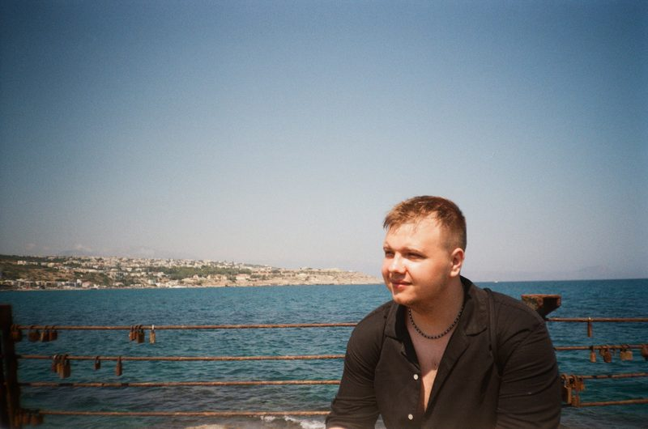
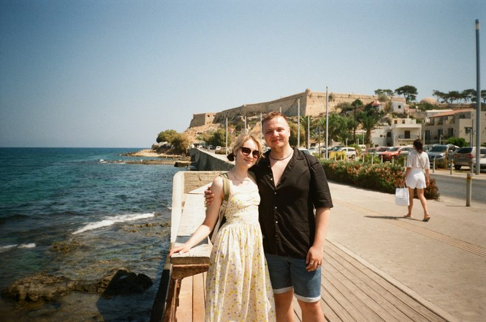
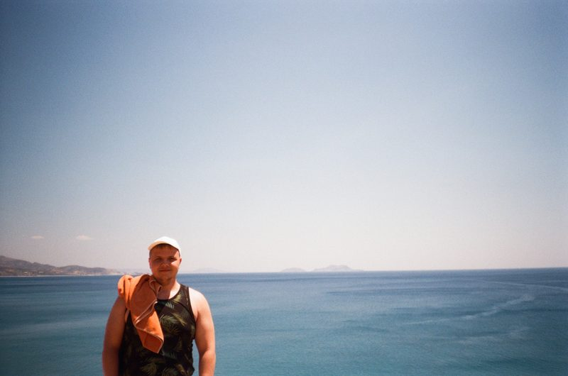
Więcej zdjęć na Instagramie.